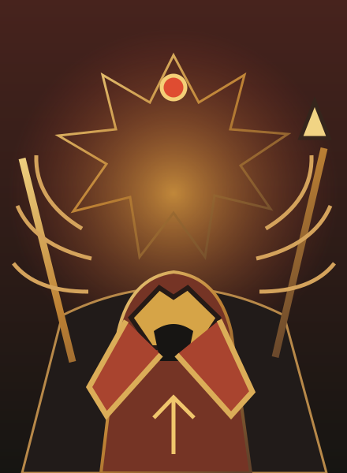

ORIGINAL UI EXPERIMENT · HadesEditable component specimen / responsive web01 — 03
HadesUNDERWORLD / RUN 04
REFERENCE STUDY
Original names · synthetic state
Original names · synthetic state

ORIGINAL VECTOR ARTNO GAME CHARACTER OR LOGO
A gift from the heights
Three powers answer the same descent. Choose the one that changes your next move.